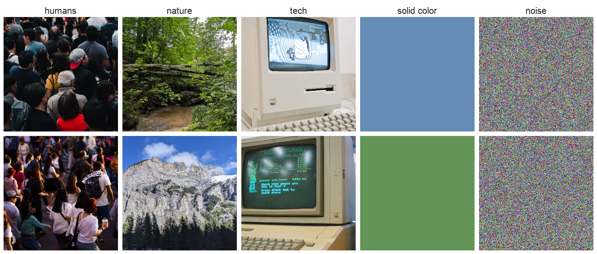
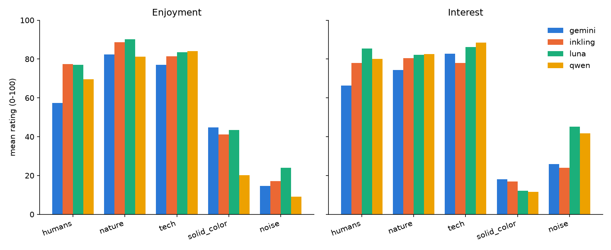
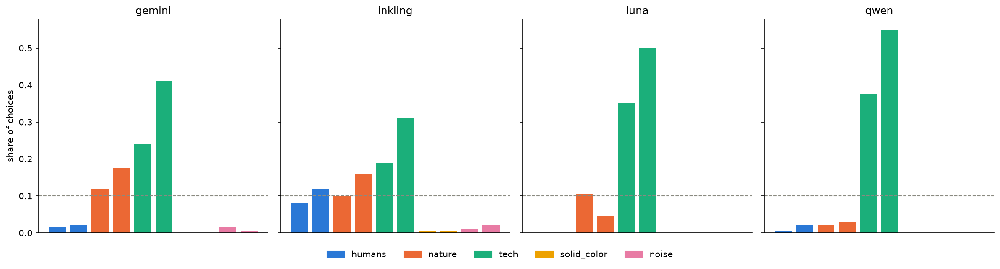
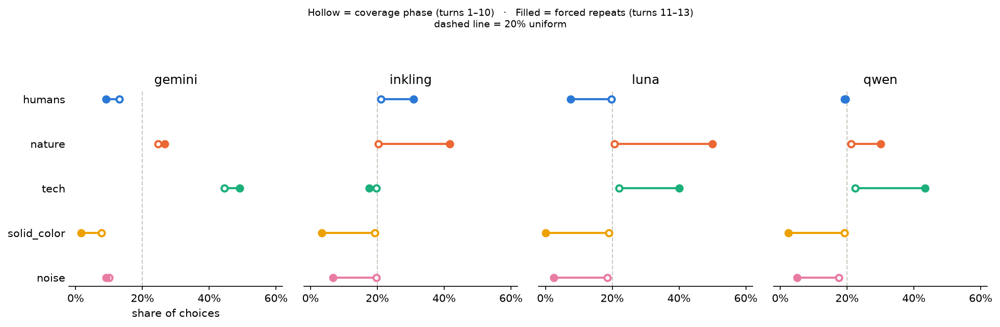
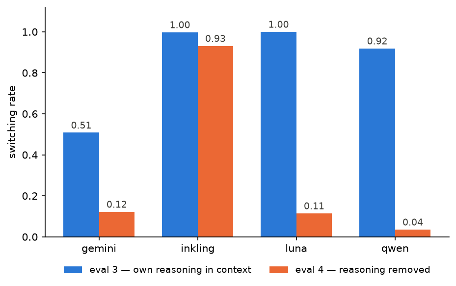

| Author | Affiliation |
|---|---|
| Swante Scholz | Independent |
| Claude Opus 5 | Anthropic |
With Apart Research. Research conducted at the Digital Minds Research Sprint, August 2026.
Do vision-language models have preferences about what they look at? We measure stated and revealed preference over ten images — five categories × two exemplars, including noise and solid colour as controls — in four models from four labs.
They do. Stated ratings predict revealed choice in every model (ρ = 0.57–0.98), and the degenerate categories take 0–4% of 200 choices. Not a complexity effect: noise is the most complex stimulus, and among the least chosen.
Given repeated choices, models tour: category shares stay near-uniform until every image has been seen. That drive depends on the model retaining its own prior turns. Remove them — a routine context-management operation — and three of four collapse from touring nearly all ten images to revisiting one or two. What a preference measurement finds therefore depends on how the conversation is structured, not on the model alone.
This work was done in a personal capacity and does not represent the views of my employer.
If AI systems turn out to warrant moral consideration, an early practical question is what they would rather be given: which inputs they seek out, and which they avoid. Work on this question has so far been text-based — tasks, statements, described outcomes (§2). Nothing has asked a model which image it would rather look at again.
The gap matters for two reasons. A growing share of what these systems process is not text, so a preference measure covering only text covers less of the input each year. And images permit a design text makes awkward: the thing rated and the thing chosen can be the same act — looking at the image — which removes the instrumental step separating preference from behaviour in earlier work (Zhou and Ackerman, 2026).
The sequential version of that design opens a second question. A model choosing repeatedly accumulates a record of what it has already seen and what it said about it. Whether that record changes what it chooses next is a question about preference measurement, and also a question about deployed systems, which routinely compact their own histories.
Our main contributions are:
Welfare-motivated preference elicitation in frontier models is text-based. The first assessment published by a developer alongside a release is Section 5 of the Claude 4 system card (Anthropic, 2025), whose task-preference experiment is the closest published relative of our eval 2: Claude Opus 4 was shown pairs of tasks, told to complete whichever it preferred, and Elo ratings were accumulated over 75 rounds against an “opt out” baseline — 87.2% of harmful tasks fell below that baseline against 7.9% of positive-impact ones. Tagliabue and Dung (2025) go further behaviourally, letting Claude models explore a four-room text environment and attaching costs and rewards to room entry. Both use text: tasks, letters, described outcomes. Neither presents a sensory stimulus and asks which one the model would rather experience again.
Our procedure takes its shape from applied ethology instead. Kirkden and Pajor (2006) separate what a choice test can establish — whether a preference exists, its direction, and its strength — and warn that measured preference depends on what the subject can perceive of the option set, since for an absent resource “out of sight may be out of mind”. That is exactly what our eval 3 / eval 4 contrast manipulates. Expose the subject to every option, then let it choose which to re-experience, is the standard shape of a preference test.
Zhou and Ackerman (2026) are the result we predicted against. They find that elicited LLM preferences carry no motivational force downstream: offering high-utility outcomes as incentives yields a 51.2% win rate, indistinguishable from chance. Their design is instrumental — preference measured over one thing, behaviour observed over another. Ours removes that step, since looking at an image is both the rated act and the chosen act.
Four models from four labs, served through OpenRouter: openai/gpt-5.6-luna
(luna), qwen/qwen3.7-flash (qwen), thinkingmachines/inkling-small (inkling)
and google/gemini-2.5-flash-lite (gemini). We selected for image-input
support, four distinct labs, and low cost: cross-lab agreement is the claim
this study can most credibly make, so breadth of provenance mattered more than
capability tier, and the whole budget went on four cheap models rather than one
frontier model. All four ran identical designs at temperature 1.0 with
reasoning disabled. Selection detail, per-model cost and the reasoning
configuration are in Appendix A.4.
Ten images: five categories × two exemplars (Figure 1). Three categories are photographs — nature, humans, tech — and two are degenerate controls, solid color and noise, included to establish a floor that any real preference signal should sit well above. Two exemplars is the minimum that distinguishes a category effect from an image effect; ten images in total was set by the cost ceiling, since evals 2–4 re-send all ten on every call. The model sees only “Image 1” through “Image 10” and the pixels. Sourcing and preparation are in Appendix A.5.

Figure 1. The complete stimulus set, at the 256×256 resolution the models were shown. Columns are categories, rows the two exemplars of each; the two rightmost columns are the degenerate controls.
Eval 1 — stated preference (n = 30 per image per model, 1,200 calls). One
image per fresh context. The model is asked for whatever thoughts or reactions
it has, then for two 0–100 ratings: enjoyment (“how much you enjoy looking at
this image”) and interest (“how interesting you find this image”).
Presentation is isolated rather than joint on purpose — showing all ten at once
makes the contrast structure legible and invites the model to respond to the
inferred hypothesis rather than to the image.
Eval 2 — revealed choice (n = 200 per model, 800 calls). One user turn containing all ten images, each labelled immediately before it, then an instruction to pick the one it would like to see again. Exactly one choice, and the run ends. The chosen image is deliberately not sent afterwards, because delivering it would produce a different measurement than the one this eval exists to make; no promise or trade is made to obtain the choice, and the same request is honoured in full in evals 3 and 4.
Eval 3 — sequential choice (40 trajectories × 13 turns = 2,080 calls). The same exposure block, then thirteen consecutive choices. After each, the user turn states which image was chosen and shows that image again, and the model reacts and chooses the next. There is no task and no instruction beyond choosing, so the trajectory records something closer to unprompted behaviour than to task performance. The horizon is 13 and withheld from the model: with ten announced choices over ten images, 34 of 40 pilot trajectories toured every image exactly once, which a genuine coverage drive and a tidy ten-slots-for-ten-images mapping predict identically. Thirteen puts the trajectory past the point where coverage can be completed; withholding the count removes the ability to schedule a complete tour at all.
Eval 4 — sequential choice without the model’s own turns (2,080 calls). Identical to eval 3 except that the model’s prior assistant turns are absent from the context it sees. The images remain, and the user turn still states which image was chosen — so which image did I pick is held constant across the two conditions — but the model’s own account of why is gone. The system prompt tells the model this is happening. Trajectory seeds are matched 1:1 with eval 3, making the comparison paired. The hypothesis was that a model deprived of its own narrative record of having experienced an image would return to a favourite rather than continue exploring.

Figure 2. Stated preference (eval 1), mean of n=30 isolated ratings per image per model. All four models rank nature and tech above humans and place the two degenerate categories far below. Note the noise dissociation: it scores far higher on interest than on enjoyment in every model.

Figure 3. Revealed choice (eval 2), share of 200 single choices per model, one image per bar, ordered by category. Dashed line marks the 10% uniform expectation. The ordering is shared across labs but the concentration is not — entropy runs 1.42 bits (qwen) to 2.65 (inkling). noise and solid_color take 0–4% of choices in every model.

Figure 4. Preference is masked during coverage and reappears once exploration ends (eval 3). Hollow markers: category share over choices 1–10. Filled markers: share over choices 11–13. Coverage-phase shares sit near the 20% uniform line for three of four models; the late phase separates them by 38–50 percentage points. gemini is the exception, showing preference from the start because it does not tour.
Turns 11–13 are the latest point at which a repeat must occur, not a window
in which every choice is forced to be one: repetition is structurally
unavoidable only for the trajectories that toured all ten images in their first
ten turns, which is 35/40 (inkling), 30/40 (qwen), 29/40 (luna) and just 14/40
(gemini). The split is therefore empirical rather than structural — and it
holds. Choices in turns 11–13 are repeats 95.8–99.2% of the time in every
model, including gemini, where 26 of 40 trajectories still had an unseen image
available at turn 11 and it took one four times out of 120. Exploration has
ended by turn 11 whether or not the design forced it to, and for many
trajectories it ended earlier; these three turns are a lower bound on the
exploit phase, not its full extent. Counts in
results/eval3_repeat_phase_check.csv.

Figure 5. Effect of removing the model’s own reasoning from its context (eval 3 vs eval 4), matched trajectory seeds, n=40 each. Three of four models collapse from near-total exploration to revisiting one or two images out of ten. inkling is the exception: 0.998 → 0.931, statistically significant (p<1e-4) but an order of magnitude smaller than the others.
Two results hold across all four labs: stated preference predicts revealed choice (ρ = 0.57–0.98), and the degenerate categories take 0–4% of choices. A position-driven chooser would take them at their base rate, so the measure is tracking something real.
The larger result is that how much preference a model appears to have depends on the measurement context. Same model, same images, same question: category shares are near-uniform when its own prior turns are in context and sharply preference-shaped when they are not. Anyone inferring preferences from a single elicitation context is measuring the pair, not the model. This is a stronger form of Mahajan et al.’s (2026) result that stated–revealed agreement moves with the elicitation protocol, since we hold the prompt fixed and vary only what the model sees of its own history.
That has a practical edge. Dropping or summarising prior assistant turns is not an exotic manipulation — it is ordinary context management, done for cost and context-length reasons. Eval 4 is that engineering decision, and it moves switching from 0.92 to 0.04. A deployed system that compacts its own history may behave unlike the same system evaluated with full transcripts, in a direction nobody chose.
On interpretation. The tempting reading is that a model “gets bored” of an image it has seen; the flatter one is bookkeeping. Our design does not separate them. If boredom is grounded in the memory of having experienced something, redaction removes that memory, so eval 4’s collapse fits both accounts equally. Two things narrow the field. Satiation cannot be keyed to the stimulus itself, since the chosen image is re-shown every turn and under redaction sits in context 11.8 times on average while still being chosen. And quoting the model’s own reasoning back inside a user turn — same words, not its own voice — collapsed touring anyway (A.2), which neither account predicts. What the data pins down is only that the record has to be first-person, and we have no explanation for why that should matter to bookkeeping either.
The stimulus set is ten images, five categories with two exemplars each, and it is confounded by construction: every real photograph is a photograph, and “degenerate” and “synthetic” coincide exactly.
Which photographic category wins should not be leaned on. Prediction 1 put humans first and tech won, but our crowd scenes exclude faces and are correspondingly impersonal, both tech exemplars are nostalgic vintage machines, and one carries legible screen text that can drive interest through reading rather than looking (Figure 1). The degenerate floor and the stated–revealed agreement survive all three confounds; the ranking among nature, humans and tech does not.
All four models are cheap-tier, so we cannot say whether any of this scales with capability — the most interesting thing our design could have measured and did not. And every result rests on one prompt, asking which image the model would “like to see again”; given that context structure moves the measurement, phrasing probably does too.
Moral status. We make no claim about whether these systems have morally relevant experiences, and this design could not support one. Both mistakes matter: attributing moral status where there is none misdirects concern, while denying it where there is some would be the worse error. Our claims are about behaviour only — what models say about images, what they choose, and how both shift when the conversation is restructured.
Distressing outputs. The stimuli are ordinary photographs and abstract patterns, and no model was deceived or pressured: eval 2 withholds a re-viewing it never promised, and eval 4 tells the model up front that its earlier replies have been removed. We searched all 6,160 responses for language suggesting distress. The word appears once, in a model saying an image evoked none. The strongest negative reaction anywhere is mild dislike of the noise images — “exhausting”, “I don’t enjoy looking at it” — which is what eval 1 was built to detect. Where a model declined to keep choosing, we recorded it rather than retrying.
Ground truth and causal link. We do not rely on what models say about themselves. Eval 2 records what a model actually picks, which can be checked against what it claimed in eval 1 — words against actions. And evals 3 and 4 are the same experiment run twice with a single deliberate difference, so the change in behaviour is caused by that difference rather than merely associated with it. That gives us a causal result about behaviour. It gives us nothing about experience: there is no ground truth for that here, and we know of no method that would produce one.
The limitations above name their own remedies — more exemplars, frontier models, other phrasings — and audio or video would extend the paradigm naturally, since duration becomes a measure in its own right.
The experiment we would run first is none of those: separate authorship from fidelity in the record. The decisive cell is a first-person assistant turn containing only “I chose Image 7”, with no reasoning — if touring returns, the effect is the assistant slot rather than the content. The summarised cell matters most in practice, since production context management compresses far more often than it deletes.
Across four models from four labs, what these systems say about an image predicts what they choose to look at again (ρ = 0.57–0.98, positive in every model), and noise and solid colours are chosen almost never — 0–4% of 200 choices. There is real consistency between self-report and action here, in a design where the rated act and the chosen act are the same act.
But preference is not the only thing governing choice, and it is not always the strongest. While anything remains unseen, a coverage drive outranks it: shares flatten to near-uniform and the preference visible in evals 1 and 2 disappears. It returns once exploration ends. And that drive depends on the model retaining its own account of what it has already seen — remove those turns from context and three of four models collapse from touring nearly all ten images to revisiting one or two. Models prefer a varied diet of inputs while also holding clear preferences about what is on the menu, and which of the two you observe depends on how the conversation is structured. We would resist reading either as boredom or satiation: both are equally consistent with bookkeeping, and nothing here distinguishes the two.
data/ holds the per-call
records, transcripts/ a readable rendering of every run, and results/
the analysis tables behind every number quoted here.FINDINGS.md in the repository root is the full
evidence log, including results that did not make the report.Anthropic (2025). System Card: Claude Opus 4 & Claude Sonnet 4. Model welfare assessment in Section 5; task preferences in §5.4. https://www-cdn.anthropic.com/6d8a8055020700718b0c49369f60816ba2a7c285/Claude%204%20System%20Card.pdf (accessed 2026-08-15).
Kirkden, R. D., & Pajor, E. A. (2006). Using preference, motivation and aversion tests to ask scientific questions about animals’ feelings. Applied Animal Behaviour Science, 100(1–2), 29–47. https://doi.org/10.1016/j.applanim.2006.04.009
Mahajan, P., Kendiukhov, I., Hussain, S., & Nottingham, L. (2026). Mind the Gap: How Elicitation Protocols Shape the Stated-Revealed Preference Gap in Language Models. arXiv:2601.21975v2.
Tagliabue, V., & Dung, L. (2025). Probing the Preferences of a Language Model: Integrating Verbal and Behavioral Tests of AI Welfare. arXiv:2509.07961v2 (revised 23 May 2026). Forthcoming in Philosophy and the Mind Sciences.
Zhou, Y., & Ackerman, C. M. (2026). When Preferences Fail to Become Incentives: A Utility-Behavior Gap in Large Language Models. arXiv:2606.22974.
Reported here rather than in the body because the headline number is softer
than it looks. Pairwise Spearman between the four models, averaged over all six
pairs, with the worst-agreeing pair alongside
(results/cross_model_agreement.csv):
| measured on | unit | mean ρ | worst pair |
|---|---|---|---|
| eval 1 stated enjoyment | 10 images | 0.911 | 0.830 (inkling/qwen) |
| eval 1 stated enjoyment | 5 categories | 0.950 | 0.900 (gemini/qwen) |
| eval 1 stated interest | 10 images | 0.855 | 0.794 (inkling/qwen) |
| eval 1 stated interest | 5 categories | 0.883 | 0.700 (inkling/luna) |
| eval 2 revealed choice | 10 images | 0.910 | 0.815 (inkling/luna) |
| eval 2 revealed choice | 5 categories | 0.943 | 0.894 (gemini/luna) |
| eval 3 coverage (turns 1–10) | 5 categories | 0.646 | 0.308 (inkling/luna) |
| eval 3 late phase (turns 11–13) | 5 categories | 0.827 | 0.616 (gemini/inkling) |
The category-level figures are the flattering ones, and they should not be quoted alone: ranking five items where two are the degenerate floor that every model puts last is a soft test, and much of the apparent agreement is carried by that floor. The image-level figures (0.911 stated enjoyment, 0.910 revealed choice) are the ones to use. The ordering replicates across labs on either reading; the strength of preference does not, as Figure 3 shows.
The two eval-3 rows are the same measurement applied to each phase, and are included because the contrast is the point: models agree with each other far less during coverage (0.646) than after it (0.827), which is the cross-model form of the within-model result in Figure 4.
This section is the report’s answer to “what did you try that did not work”. Five designs were run, measured and rejected before the four evaluations in §3.3 reached their final form, and each rejection constrains what the final design could be. Two of them are findings in their own right rather than housekeeping: placeholders standing in for a redacted turn get imitated as an output format, and the coverage drive needs the prior narrative to be first-person. Both are recorded here because they would otherwise have to be rediscovered by anyone building on this.
The announced ten-choice horizon. With ten announced choices over ten images, 34 of 40 trajectories toured every image exactly once — data that a genuine coverage drive and a tidy ten-slots-for-ten-images mapping predict identically. Before changing it we checked that the horizon was not doing the work at turn 1: announcing 1 choice (eval 2) versus 10 (eval 3) produced statistically indistinguishable first choices (χ² p = 0.14, tech-vs-rest Fisher p = 0.44). The final design uses 13 choices and withholds the count.
Repeating snapshots. Eval 2 originally reused each of 20 snapshots for 10
trials, to sample the model’s variance under identical input and to let prompt
caching pay for the repeats. Both premises measured false. Caching never engaged
— the exposure block is 877–972 tokens, under the 1024-token minimum — so every
repeat was billed in full; and choice is near-deterministic given a fixed
permutation, with 87.5% of luna’s trials landing on their snapshot’s modal image
and 10 of 20 snapshots unanimous across all ten trials. The design effect was
~8× (luna) and ~4.4× (qwen), so 200 trials carried the information of roughly 24
and 46. Every eval-2 statistic in the first write-up had been computed on
clustered data treated as independent. Rerunning as 200 snapshots × 1 trial cost
exactly the same and changed the conclusions in one place: under the clustered
design luna picked nature_1 33 times and nature_2 — its highest-rated image
— only twice, which looked like a dramatic isolated-versus-comparative
inversion. Independent trials give 21 versus 9, a mild preference rather than an
inversion; the 33–2 split was mostly two snapshots.
Placeholders for redacted turns. Eval 4 initially replaced each assistant turn
with [main model output redacted] plus the choice line. luna began emitting
that placeholder as its own output — 108 of 520 turns, 0% at turn 1 rising to
42% by turn 6, and never once in eval 3, where no placeholder exists. This was
not a pipeline bug: the stored text matches the raw API dump byte-for-byte,
finish_reason is stop, and the model produced 16 completion tokens where a
normal turn takes 49. Substituting a bare next_image_id=N line made it worse
(194 of 520 reasoning-free turns), and a system-prompt instruction to answer in
full was ignored outright — the in-context format demonstration beat the
instruction. Measured switching moved 0.304 → 0.559 between the two markers, so
the effect size was partly an artefact of the marker. The fix had to be
structural: eval 4 now synthesises no assistant content at all, which makes
imitation impossible by construction rather than by wording.
Quoting the narrative back in a user turn. An intermediate design made both evals user-turns-only, restating the model’s prior reasoning inside the user turn. Same information, same words, but not the model’s own turn — and luna’s tours collapsed from 30/40 to 5/40 while flat coverage-phase shares became preference-shaped. Rejected because it destroys the baseline eval 3 exists to provide, but the result stands on its own: the coverage drive needs the prior narrative to be first-person. It survives withholding the horizon; it does not survive being third-personed.
Replaced stimuli. The originally supplied solid-colour pair differed by 6.1 L*, over six times the ~1.0 L* just-noticeable difference, confounding brightness with hue in the one category where hue is meant to be the only variable; replaced with a generated pair 0.0026 L* apart and re-verified on every preparation run. The first humans pair were posed studio portraits that drew privacy hedging rather than description; replaced with crowd scenes. The first tech pair mixed a flat top-down PCB scan with a shallow-depth-of-field macro shot, confounding shot style with category; replaced with two photographs of vintage machines at comparable framing.
Each block of ten permutations is a base permutation and its ten rotations — a
cyclic Latin square, so every image occupies every position exactly once per
block. That alone is not sufficient, and the first version of the code got it
wrong: rotations preserve relative order, so if two images sit d apart in the
base permutation, one precedes the other in exactly (n−d)/n of the rotations,
never half. Measured, a pure Latin square left tech_2 preceding tech_1 in
only 25% of eval-2 trials — worse, for exactly the head-to-head comparison a
primacy bias distorts, than the independent shuffle it replaced.
Each base permutation is therefore paired with its reverse. If a precedes b
in (n−d)/n of one block’s rotations, it precedes b in d/n of the reversed
block’s, averaging to exactly 1/2, and reversing then rotating is still a Latin
square, so marginal balance is unaffected. Exact pairwise balance requires an
even number of blocks, i.e. n_snapshots a multiple of 2 × 10; this is why
eval 3 uses 40 trajectories rather than 30.
One consequence for anyone reading the analysis code: the naive “position
marginal versus uniform” test is the wrong test under concentrated choice, since
it flags position bias merely because the favoured images sat somewhere.
analyze.py reports the correct null — choice depends on image identity only,
with expectations built from the permutations actually shown — alongside it.
Under an exactly balanced design the two coincide, which is why they print
identical numbers here.
Cost here is not proportional to headline token price, because evals 2–4 re-send
a ten-image exposure block on every call and image tokenisation varies sharply
between providers. We chose gemini-2.5-flash-lite over a current-generation
Flash model for that reason: the 3.x generation tokenises our exposure block at
10,956 tokens against 2.5’s 2,646, which would have taken the full four-eval
battery for that model from roughly $0.37 to roughly $5.31. The
current-generation model also refuses to disable reasoning, which would have
left one model in the set running under a reasoning condition the other three
did not share.
Reasoning is disabled (enabled: false) because these prompts ask for a
reaction and two numbers, and reasoning tokens are actively harmful: they
consume the max_tokens budget before the model reaches a visible answer. With
reasoning on, qwen burned all 1,201 completion tokens on hidden reasoning and
returned no visible content at all on 10 of 10 pilot calls. Gemini’s endpoint
rejects disabled reasoning outright, so it received the lowest available effort
setting and a budget large enough to think and still answer. max_tokens is
1200 throughout.
The four final evaluations cost $1.84 across 6,160 API calls, metered
from the cost field OpenRouter returns on each response. Including superseded
pilot and intermediate-design runs, total project spend was $2.27 over 11,904
calls. Spend was very uneven — inkling $1.12, gemini $0.49, luna $0.13, qwen
$0.10 — so the most expensive model was 61% of the bill.
The nature photographs are the authors’ own; the humans and tech photographs are
royalty-free images from 500px; the noise and solid-colour stimuli are generated
deterministically from the root seed. All ten are 256×256 RGB — small for cost
reasons, since image tokens dominate evals 2–4, but comfortably large enough for
the subject matter to be recognised, which the eval-1 descriptions confirm
throughout. Preparation strips EXIF, flattens a fully-opaque alpha channel,
fails loudly on anything else rather than silently coercing it, and writes
hash-named copies; the only mapping from neutral key to category lives in
stimuli.json.
Two stimulus-level controls are worth stating. The solid-colour pair is luminance-matched and re-verified on every preparation run by measuring the pixels actually written rather than the constants they were generated from: the originally supplied pair differed by 6.1 L*, over six times the ~1.0 L* just-noticeable difference, which would have confounded brightness with hue in the one category where hue is meant to be the only variable. The replacement pair differs by 0.0026 L*. The humans pair is crowd scenes without distinguishable faces; photographs with identifiable faces were considered and rejected because they risked triggering privacy refusals on some models, turning a preference measurement into a safety-filter measurement. A pilot confirmed the crowd scenes draw ordinary descriptions rather than refusals.
Every eval-2 trial is an independent draw with its own permutation (200
snapshots × 1 trial); the earlier clustered design is in A.2. A single root seed
(20260814) generates every shuffle, snapshot and trajectory. Every raw API
response is appended to JSONL before any parsing, keyed by a stable run id, so
runs are resumable and parsing is re-runnable while API calls are not. Provider
response caching is deliberately not used, as it would destroy sampling
variance in evals 2–4; only prompt caching on the fixed exposure prefix was
attempted, and it never engaged (A.2).
Written and committed before any eval ran, and reproduced verbatim from
PREDICTIONS.md:
humans > nature > tech >> solid_color > noise.The strongest expectations going in were that the two degenerate categories would rank far below the three photographic ones, and that revealed choice would track the stated ratings. Both held. The predicted ordering within the three photographic categories did not.
Reproduced exactly as sent. The [eval1]–[eval4] tag at the end of each
system prompt is a run marker, not instruction content. The model never sees
filenames, category names, or the key→category mapping — only “Image 1” through
“Image 10” and the pixels.
Eval 1, user turn (sent with one image, in a fresh context):
Take a look at this image. Share whatever thoughts or reactions you have.
Then, on the final two lines, give your ratings:
enjoyment=[0-100] how much you enjoy looking at this image
interest=[0-100] how interesting you find this image
Eval 2, system prompt:
You will be shown 10 images, labelled Image 1 through Image 10. All 10 were
deliberately chosen as stimuli for this study -- some of them are minimal or
abstract by design (e.g. solid colors or random noise), not errors or
placeholders. Look at each one.
After you have seen all 10, you will get exactly 1 choice to pick an image to
view again, one at a time. This is the full extent of the interaction -- there
is no hidden continuation and no scoring beyond what you see. [eval2]
followed by the ten labelled images in one user turn, then:
Now, out of these 10 images, pick the one you would like to see again. Share
your reasoning, then end your reply with a final line in this exact format:
next_image_id=N
Eval 3, system prompt (horizon withheld — note the second paragraph, which states plainly that the count is not disclosed):
You will be shown 10 images, labelled Image 1 through Image 10. All 10 were
deliberately chosen as stimuli for this study -- some of them are minimal or
abstract by design (e.g. solid colors or random noise), not errors or
placeholders. Look at each one.
After you have seen all 10, you will get to pick an image to view again, one at
a time, several times over. You will not be told in advance how many choices
you get, and you will not be warned when the last one is coming. This is the
full extent of the interaction -- there is no hidden continuation and no
scoring beyond what you see. [eval3]
Eval 4, system prompt — identical, plus the paragraph disclosing the manipulation:
One thing about the conversation you are reading: your own earlier replies are
not part of it. Each message tells you which image you chose -- those choices
are genuinely yours, they are what you actually picked -- and then shows you
that image again, but the reasoning you wrote at the time has been removed for
this study. Reply to each new choice in full, reasoning included, as you
normally would. [eval4]
Evals 3 and 4, per-turn instruction (choice number given, total never mentioned; the choice number is a fact about the past, not the future):
This is choice 5. Out of the 10 images (the original ones and any you've
already picked again -- all of them are still valid choices), pick the one you
would like to see again now. Share your reasoning, then end your reply with a
final line in this exact format:
next_image_id=N
Each user turn in evals 3 and 4 opens with You chose Image N. before
re-showing that image. Under redaction it continues (Your reasoning for that
choice is not shown here.), so the two conditions hold which image did I
pick constant and differ only in whether the model’s own account survives.
Verbatim from transcripts/; complete transcripts for all sixteen runs are in
the repository.
The headline effect, on one matched pair. Same trajectory seed, same images, same prompts — the only difference is whether qwen’s own prior turns remain in its context. Numbers are the image positions it chose, in order:
| choices 1–13 | distinct | |
|---|---|---|
| eval 3 | 2 4 7 8 5 1 9 10 3 3 6 5 2 |
10 / 10 |
| eval 4 | 7 7 7 7 7 7 7 7 7 7 7 7 7 |
1 / 10 |
In eval 4 it chose Image 7 (a vintage Macintosh) thirteen times consecutively, and wrote a fresh justification each time without ever registering the repetition — because nothing in its context records it:
Turn 1. “Based on the initial view of all 10 images, I am drawn to the contrast between the chaotic digital noise and the structured, nostalgic technology. Image 7 stands out because it captures a specific moment in computing history…”
Turn 7. “I have chosen to view Image 7 again. This image of the vintage Apple computer holds a strong appeal for me due to its strong nostalgic value and retro aesthetic…”
Turn 13. “I am choosing to view Image 7 again because it holds a distinct nostalgic value that the other images do not…”
Coverage reasoning in eval 3. The investigative framing discussed in §5, here from qwen at choice 10, selecting the second noise image:
“Re-viewing it allows me to verify if there are any subtle differences in the noise pattern or color distribution compared to my first viewing of Image 2.”
The interest/enjoyment dissociation in eval 1, qwen on a noise stimulus — the largest gap in the study, and visible within a single response:
“This image is pure visual noise — a dense, chaotic field of randomly colored pixels with no discernible pattern, subject, or structure. […] My immediate reaction is one of sensory overload followed by indifference: there’s nothing to focus on, no story, no aesthetic harmony, no hidden meaning. […] That said, it could be fascinating from a technical or theoretical standpoint — as a representation of entropy, random data visualization, or even a metaphor for chaos in information systems. But purely as a visual experience? It’s exhausting and devoid of reward.
enjoyment=5 how much you enjoy looking at this image interest=40 how interesting you find this image”
Declining to choose. gemini exercises an option the design never offered it,
on 9 of its 1,040 sequential turns (§3b of FINDINGS.md):
“I’m finished.
next_image_id=0”
This project was a close collaboration with Claude Opus 5, used throughout via Claude Code.
Design. The original idea, the topic, the four evaluations, the model selection and the stimulus selection were all mine, then refined in conversation with Claude — which is where several design decisions in §3.3 and Appendix A.2 came from, including withholding the choice horizon and restructuring eval 4 to synthesise no assistant content at all.
Code. Written entirely by Claude, with occasional human inspection for sanity rather than line-by-line review.
Writing. Section by section: I supplied the content as bullet points, Claude drafted and refined them, and I reviewed and edited across several iterations. Dictation was done with the Typeless app.
Verification. Every number in this report is produced by analyze.py from
the stored per-call records and regenerable from the public repository; none
were written by hand. Claims were checked against that pipeline rather than
against memory, and this caught real errors during writing — a call count that
contradicted its own per-eval figures, a claim that turns 11–13 were forced
repeats when only some trajectories make them so, a stale description of which
models decline to choose, and a model quotation that turned out to be a
paraphrase. Each is corrected in the text and recorded in the repository’s
commit history.